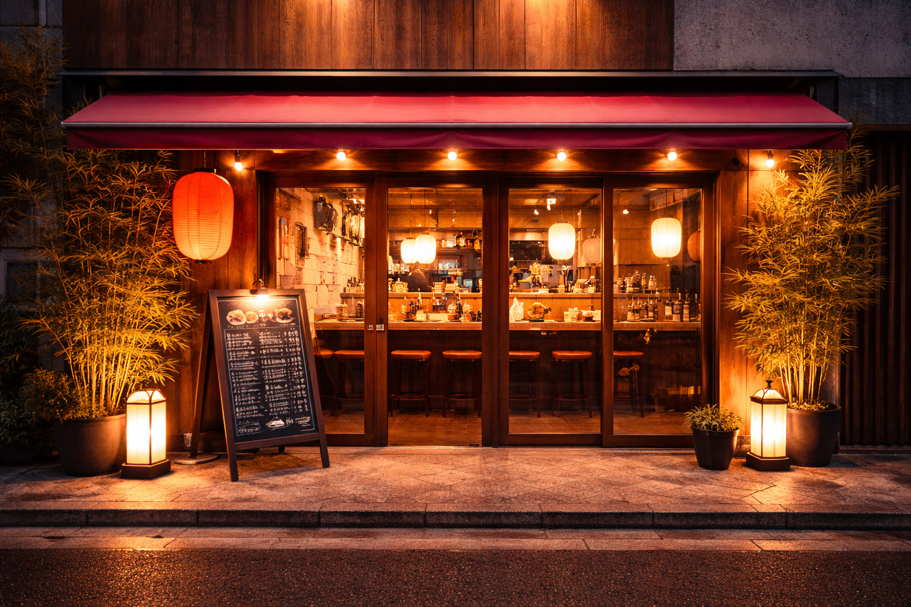

店
舗
店舗紹介
本店
- 住所 空想県空想市空想町1-1
- 営業時間 11:00〜15:00 / 17:00〜22:00
- 定休日 毎週水曜日
- 支払い 現金のみ
- 駐車場 20台
- 座席 カウンター15席 / ボックス8席
落ち着いた雰囲気の本店。
初めての方にもおすすめのスタンダード店舗です。
二号店
- 住所 空想県空想市空想町2-2
- 営業時間 11:00〜15:00 / 17:00〜23:00
- 定休日 毎週火曜日
- 支払い 現金 / クレジット
- 駐車場 なし
- 座席 カウンター15席 / ボックス3席
仕事帰りにも立ち寄りやすい駅近店舗。
二号店のみの夜限定メニューもご用意しています。

三号店
- 住所 空想県空想市空想町3-3
- 営業時間 11:00〜22:00
- 定休日 不定休
- 支払い 現金 / クレジット
- 駐車場 30台
- 座席 カウンター20席 / ボックス12席
家族連れにも人気の広々とした店舗。
ゆったりとした空間でお食事を楽しみください。